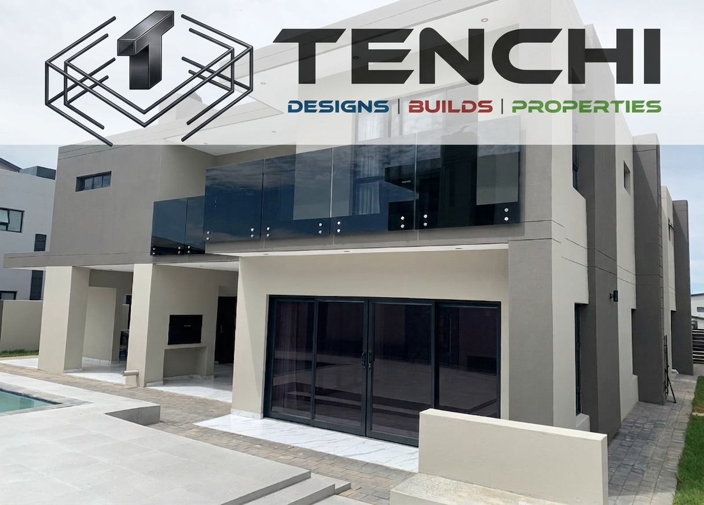
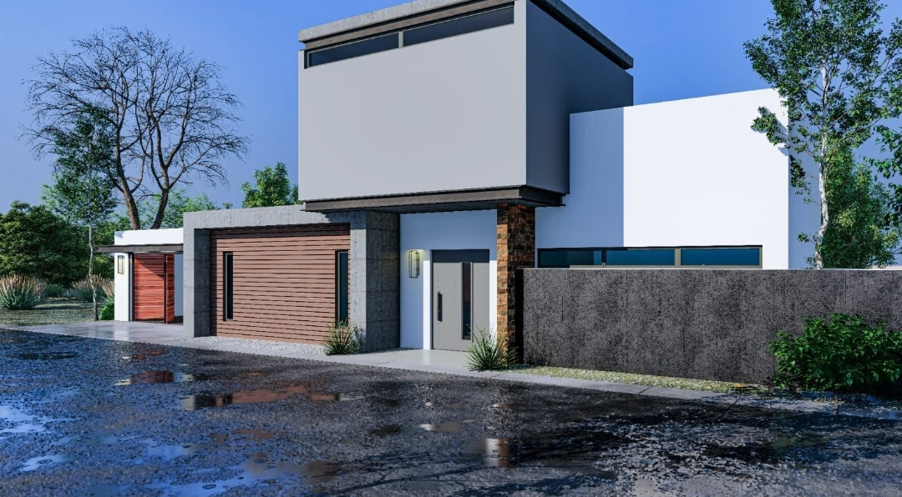
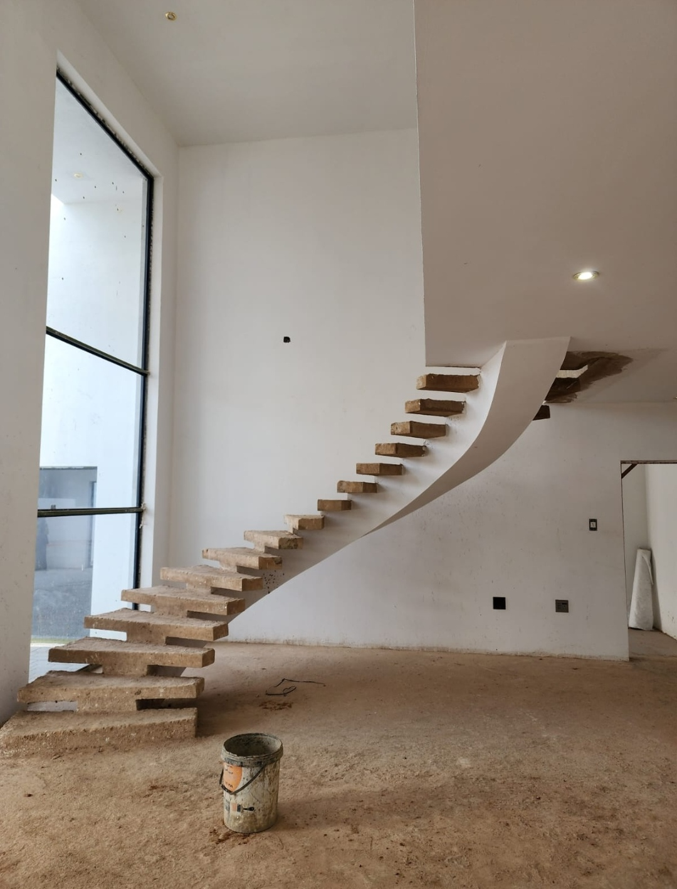

Construction & Working Drawings
Precise CAD drafting, structural steel schedules, foundation plans, and code-compliant municipal drawing packages.
Learn More about Working Drawings
Precision Drafting. Innovative 3D Interiors. Solid Structural Builds.
Transforming complex architectural concepts into exact technical drawings and turnkey physical builds across residential and commercial sectors.

Precise CAD drafting, structural steel schedules, foundation plans, and code-compliant municipal drawing packages.
Learn More about Working DrawingsAdvanced spatial planning, interior walkthroughs, lighting design, and material selection renderings.
Learn More about 3D ModelingStructural alterations, open-plan kitchen removals, structural extensions, and full turnkey builds.
Learn More about Renovations
"The 3D interior models gave us total clarity on space before ground broke. Tenchi Construction handled both the drawings and the actual renovation perfectly."